Impact Awards
The Center for Art and Public Life has hosted the Impact Awards each year giving the students an opportunity to win funding and mentorship for their impact project.
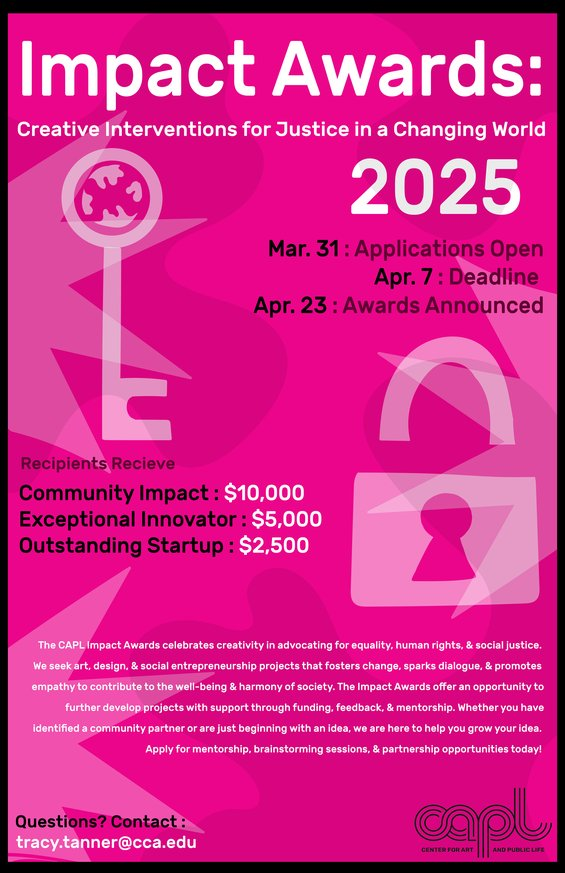
2025 Impact Award Theme: Creative Interventions for Justice in a Changing World
The CAPL Impact Awards celebrates creativity in advocating for equality, human rights, and social justice, especially in a time when personal freedoms are at risk. With the shifting political climate surrounding the U.S. Presidential election, activism alone may not be enough to drive change. Now, more than ever, we need new, innovative ways to cultivate empathy and understanding for differences and address urgent social issues. This year, we are looking for student projects that explore these challenges through social health design, including but not limited to gender equity, LGBTQ+ inclusivity, transgender rights, disability rights, and immigrant inclusion.
We seek art, design, and social entrepreneurship projects that fosters change, sparks dialogue, and promotes empathy to contribute to the well-being and harmony of society. Does your project tackle one of these key issues? Is it created to inspire action and provoke meaningful change? Whether through visual art, design, interactive projects, or digital media, we welcome all creative forms that promote knowledge, perspective, and understanding.
The Impact Awards offer an opportunity to further develop projects with support through funding, feedback, and mentorship. Whether you have identified a community partner or are just beginning with an idea, we are here to help you grow your idea. Apply for mentorship, brainstorming sessions, and partnership opportunities today. Help shape a more compassionate world where creativity fuels lasting impact.
The Awards:
Community Impact Recipient of $10,000
Exceptional Innovator Recipient of $5,000
Outstanding Startup will receive $2,500
After announcing the awards, the recipients will meet with the CAPL staff to discuss timeline for the project, disbursement of funds, and storytelling requirements for final payments release.
Applications consist of:
A 250 word project proposal.
3 to 5 images of your proposal Jpeg/pdf format Maximum file size 8.0 MB
A 10 minute video presenting your project, the issues it addresses, and the anticipated outcome.
A 24” x 36” Poster of your project Jpeg/pdf format.Maximum file size 8.0 MB
Important Dates:
Rubric will be released on Monday, March 3, 2025
Jurors will be released Monday, March 17, 2025
Monday, March 31, Now accepting Applications Here
Monday, April 7, Impact Award Entries Due
Thursday, April 10, Finalist Announced
Monday, April 14, Presentation Workshop for Final Presentations
Friday, April 18, Juror Interviews
Wednesday, April 23, Award Recipients Announced
Remember the key word is Impact. If you have a project or artwork you believe aligns with this year’s theme, but would like help
growing its impact, please reach out to tracy.tanner@cca.edu.
2024 Awards Recipients:
Community Impact Recipient of $10,000
Echoes of Tomorrow: The Power of Your Vote
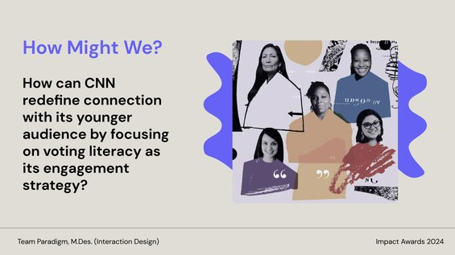
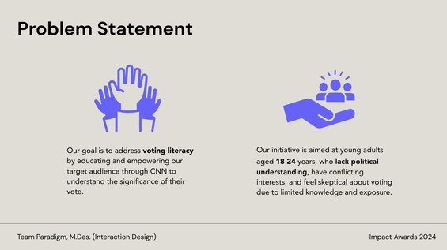
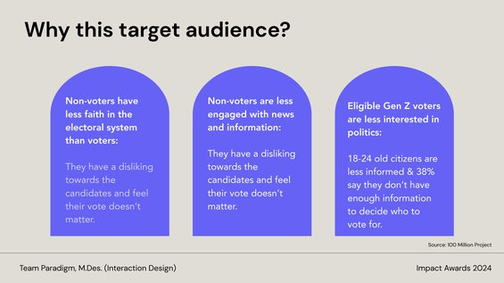
Echoes of Tomorrow: The Power of Your Vote - Team Paradigm - Anurag Bhavsar, Arunima Walimbe, Maitri Bhateja, Mehak Prashant Kothar, Nidheesh Hasabni
Team Paradigm's research initiative, based at the Social Lab within the California College of the Arts, aims to address the concerning trend of low political engagement and voting rates among young adults in the United States. This initiative is poised to foster a culture of informed decision-making, enabling young voters to understand and navigate the complexities of the political landscape. By focusing on voting literacy as a cornerstone of engagement, we aspire to educate, empower, and inspire young voters, ultimately transforming their engagement in the democratic process.
Our research has identified several barriers contributing to low voter turnout among young adults, including limited political understanding, conflicting interests, and skepticism toward voting. By demystifying the electoral process and emphasizing the impact of each vote, we aim to cultivate a sense of responsibility, empowerment, and active participation in democracy among young adults. Our comprehensive approach includes exploring barriers to voting literacy, innovating content formats that resonate with younger audiences, and collaborating with stakeholders to integrate educational efforts into CNN's engagement strategies. Central to our plan is the co-creation of actionable strategies that not only educate but also inspire young adults to see the value in their vote and the difference it can make.
Our partnership with CNN represents a pivotal opportunity to redefine the network's connection with its younger audience, making a lasting impact on the future of civic engagement and participation in the democratic process. The successful implementation of this project has the potential to significantly increase voter participation among young adults, strengthening democratic processes and ensuring that all voices are heard and represented.
Impact Awards 2024 Final Report: Team Paradigm
We are excited to provide an update on our project's progress and to express our heartfelt gratitude for the funds allocated to us. This support has been instrumental in our journey, and we are thrilled to share the transformative impact these funds have had on our project.
• Our journey began with a vision to create a user-centered product that would resonate with a younger audience, helping them realize the importance of their vote, identify their voice and values, and encourage them to participate in the voting process. With the funds provided, we have come closer to this vision, overcoming challenges and celebrating milestones along the way.
• One of our biggest hurdles was ensuring that our product was intuitive and accessible to all users. With the funds allocated for user testing, we recruited 10 diverse participants. These sessions were eye-opening, as we discovered critical areas for improvement. For example, one participant struggled with a key feature, prompting us to redesign it for better usability. This change significantly enhanced the user experience, making our product more intuitive and effective in conveying the importance of voting.
• Creating visually appealing interfaces, assets, and videos was essential for communicating our vision to stakeholders. Canva became our go-to tool for this purpose. We also upgraded to a premium subscription, which allowed us to collaborate on projects more efficiently. We crafted engaging visuals that captured the essence of our project, leading to positive feedback and increased support.
• Testing prototypes can be daunting without the right tools. Thunkable, a no-code platform, was a game-changer for us. We were able to quickly build and test prototypes, iterating based on feedback. This rapid prototyping helped us refine our product efficiently. One prototype revealed a major flaw in our initial design, which we corrected, resulting in a more robust and user-friendly product that better engages young voters.
• Advertising our project effectively was another significant challenge. Initially, we struggled to reach our target audience through organic means. However, with the funds allocated for social media advertising, we were able to launch a targeted campaign. The investment paid off as we saw a significant boost in engagement. More people attended our workshops, providing diverse perspectives that enriched our project. This increased visibility also caught the attention of potential investors, opening new avenues for funding.
• Attending the CONFIG conference was a highlight for us. It provided a platform to conduct additional testing rounds and network with industry experts. The insights gained from the conference sessions and the connections made were invaluable. For instance, we met a potential collaborator who provided crucial feedback that helped us pivot our approach, resulting in a more effective solution to engage young voters and emphasize the importance of their participation in elections.
• Reaching and educating young voters was a significant challenge initially limited by our resources. However, with the Impact Award funds, we conducted testing in schools and offered incentives to participants. This strategy not only boosted our recognition but also provided the crucial feedback needed to refine our product.
We have carefully planned the remaining expenditure, ensuring it will continue to drive our project's success. The strategic use of these funds has enabled us to achieve significant milestones and grow steadily. In summary, the allocated funds have had a profound impact on our project's evolution. Each expenditure has brought us closer to our goal of making young audiences realize the importance of their vote, helping them identify their voice and values, and encouraging them to participate in the voting process. We are deeply grateful for your support, which has made all of this possible.
Thank you once again for your generosity and belief in our project. We look forward to sharing more updates and accomplishments with you in the future.
Thanks,
Team Paradigm
Exceptional Innovator Recipient of $5,000
In My Pajama, From Silk Road to San Francisco
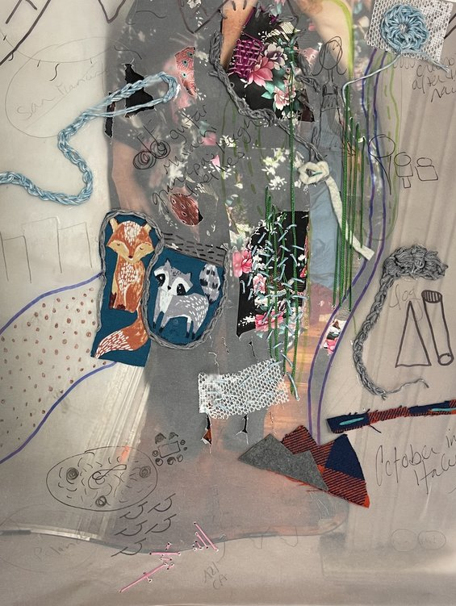
In My Pajama, From Silk Road to San Francisco by Badri Valian, KathrynVercillo
The Impact Grant will enable the expansion of a creative series from impacting a small local community to having a much larger impact. I was honored to receive the 2024 USAAF APICC grant to complete the first iteration of the project called “Silk Road to San Francisco”. The grant would allow for it to grow significantly.
This series of workshops combines storytelling, mapmaking and textile art into a guided sensory exploration of the challenges and resilience inherent in experiences of immigration, displacement, and trauma. Each workshop results in a powerful visual art exhibit. The initial small project focused on San Francisco’s Asian immigrants; the grant would allow me to include the important voices of Iranian, Ukrainian, diverse LatinX immigrants and others.
The project’s benefits are multifold. Intimate workshops (which are conducted in collaboration with Kathryn Vercillo who is trained in craft as therapy) offer empowerment to participants. The exhibit's private opening unites participants across all workshops, fostering collective healing and solidarity among immigrant communities. Subsequently, as the exhibit opens to the public, it aims to raise awareness and cultivate empathy for San Francisco's diverse immigrant community.
As my CV shows, I am capable of executing large participatory projects. I am committed to utilizing the grant efficiently to maximize impact, which is magnified by the potential I have for support and collaboration within my professional network. Having worked in the past with organizations including ArtTogether, Central Stage, Diaspora Arts Connection, and Chinese Cultural Center, I am confident that the reach for this project can be huge.
CAPL IMPACT AWARD FINAL REPORT
Receiving the $5,000 CAPL Impact Award has been transformative for In My Fluffy Pajamas,
allowing us to take our workshops to new communities and expand the project in ways that we
hadn’t anticipated.
We brought our guided art workshops exploring immigration challenges to the Latine community
at the Mission Cultural Center for Latino Arts (MCCLA). This collaboration was deeply
meaningful, as MCCLA provided a vibrant and welcoming space that resonated with the cultural
richness of its participants. To ensure that language wasn’t a barrier, we allocated a portion of
the funds to provide stipends for two Spanish-speaking translators. These translators not only
facilitated communication but also shared their own powerful stories of immigration, further
enriching the workshop experience.
Through these workshops, participants explored sensory memories—like a specific sound or a
cherished fabric—that connected them to their roots. For example, one participant from Puerto
Rico shared vivid memories of the sound of a gate opening at home and the local trees, while
another recalled navigating the complexities of being a South American college student in the
U.S. during the pandemic. These sessions fostered empathy and connection among diverse
participants, creating a space where American-born residents could hold space for and learn
from the experiences of immigrants.
Building on this momentum, we utilized CAPL’s network to create a public iteration of the project
at San Francisco’s Ferry Building. This event invited a broader audience into the fold,
transforming the intimate workshops into a participatory public art experience. By focusing on
prompts that encouraged collective creativity without delving into potentially triggering personal
histories, we crafted a safe, inclusive space where locals and tourists alike could engage with
themes of belonging and resilience.
Had we received the $10,000 award, we would have expanded these public interactions into
events within the Mission District, reaching even deeper into the community. Additional
translators and art supplies would have been essential to scale up the project. Additionally, in
terms of our workshops, we identified a need for childcare during the workshops—a barrier for
many parents eager to participate. With additional funding, we could have offered a nearby
space staffed with childcare providers and stocked with child-friendly art supplies, enabling more
parents to fully engage in the creative process.
The CAPL Impact Award has taken In My Fluffy Pajamas from a series of workshops to a
multifaceted project that bridges communities through art, stories, and connection. We are
deeply grateful for the support and look forward to continuing to build on this success.
You can see photos from some of the events at
https://inmyfluffypajamas.substack.com/t/imfp-capl-impact.
Outstanding Startup Recipient of $2,500
Shaping the Future of Education
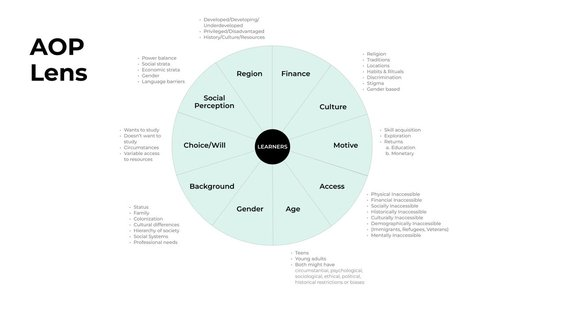
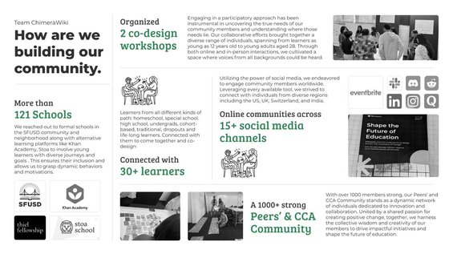
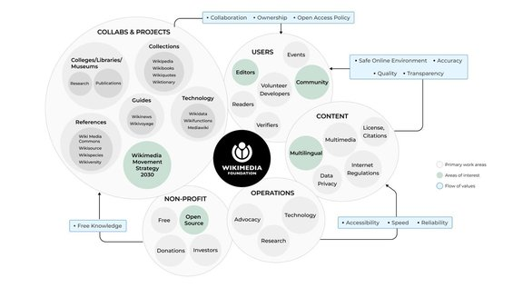
Shaping the Future of Education by Sharpi Singh, Ruchira Biswas, Sakshi Shah, Mrunal Suryavanshi
In partnership with Wikimedia, we aim to transform the education ecosystem, aligning it with Generation Z's needs. Our goal is to leverage the open-source community of Wikimedia to address educational gaps and the availability of resources, thus turning every Gen-Z dropout into an active contributor to the knowledge economy
The existing education system, established in a bygone era, was inherently oppressive, excluding various social groups. Despite the passage of time, there have been minimal changes to this system, continuing its outdated norms. By relooking at this through an anti-oppressive lens, we are now exploring ways to reimagine education, aiming to create a system that is flexible, adaptable, and inclusive. Our goal is to ensure that education, a fundamental right, is accessible to all.
We are engaging communities globally through co-design workshops where participants from varied educational backgrounds envision their ideal learning scenarios. This reflective exercise spans their entire learning history, then complemented by discussions that aim to unearth the individual and collective gaps and needs in learning. This co-design workshop offers an opportunity to hear previously unheard voices, allowing us to leverage the crowdsourced knowledge from Wikimedia to effectively create a hybrid social environment where individuals from any background can access and exchange information without the pressure of competition.
Aligned with Wikimedia's 2030 Movement Strategy focusing on innovation and equity, our goal is to utilize this extensive network to enhance education's adaptability and accessibility, particularly for marginalized voices. We strive to empower users to interact with Wikimedia, promoting a self-reinforcing cycle of learning and sharing.
Connect the Dots- A Wikipedia Product Offering
Essay on how Impact Awards funding became a catalyst for us
Background
We built a feature 0-1 on Wikipedia’s article page that empowers Gen-Z to construct informed
opinions by providing a comprehensive, authentic view of every story. In this, we offer different
kinds of readers a customizable way to explore a curated collation of information. And eventually,
it promotes critical thinking and helps readers develop an educated point of view.
Our initial months were filled with intensive research, co-design workshops, and late-night
brainstorming on how to make Wikipedia not just a source of information but a tool for developing
well-rounded perspectives.
Four months into our project, we won a $2,500 award for our innovative approach to digital
education. This funding became the catalyst that propelled our project forward in ways we hadn't
imagined.
Expanding our User Research and Testing Vastly
The first thing we did was allocate a portion of the funds to expand our user research. We were
able to conduct additional co-design workshops, this time reaching out to a more diverse group of
Gen-Z participants through paid user recruitment tools like UserTesting and Dscout.
With the funding, we were able to properly incentivize our participants, leading to expanded user
testing and bringing in a wider demographic of Gen Z participants from diverse backgrounds.
This allowed us to refine the product further, ensuring that it resonated with a broad audience.
Bringing the Solution to Life with Prototyping
With a clearer understanding of our target audience, we invested in prototyping tools like Jitter
(motion design tool) that allowed us to create more sophisticated mock-ups of our customizable
exploration feature. This visual representation of our idea was crucial in communicating our vision
to potential stakeholders and gathering more precise feedback from our test users.
Elevating our Content with UX Writing Experts
One crucial area where the funding made a significant impact was in refining our UX writing. We
recognized that getting the content right was paramount – it needed to be inclusive,
anti-oppressive and must resonate with Wikipedia's neutral tone. However, this specialized skill
set was not inherent to our team.
Using a portion of the funds, we reached out to UX writing experts through ADPList and various
networking events. This allowed us to collaborate with professionals who had experience in
crafting the language for digital platforms. We worked together to fine-tune every piece of text in
our interface, ensuring that our language was not only clear and engaging but also respectful and
unbiased. This process helped us create a more welcoming and accessible experience for all
readers.
Reflecting on the Impact of Funding
However, as we reflect on the project, we realize there was even more we could have achieved
with additional funding.
With more resources, we would have:
● Invested in deeper market research, exploring how different cultural backgrounds and
educational systems affect how Gen Z consumes information. This would have helped us
create even more tailored content journeys, ensuring that Wikipedia’s vast knowledge base
truly caters to every individual’s unique way of learning.
● We would have also expanded our outreach efforts, engaging with educational
institutions to pilot the feature in schools and universities and thus incorporating the
feedback.
● We could have partnered with Machine Learning/AI engineers to understand how
content is curated and the possibilities and limitations of building our feature on Wikipedia
from a development perspective.
Conclusion
Looking back, the journey of building this Wikipedia feature has been one of learning,
collaboration, and growth. We’ve taken a digital platform that many viewed as static and
transformed it into a dynamic tool for educating and empowering the next generation of leaders.
The $2500 award played a crucial role in helping us bring this vision to life, but more importantly,
it has inspired a group of young girls to think beyond the box and to keep pushing their ideas
ahead. We hope to take this zeal forward as a team – one informed perspective at a time.
Other Finalists
CCAxCCM - Creativity Beyond the Museum
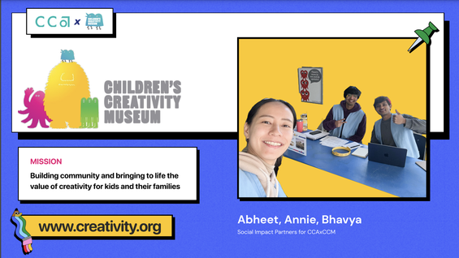
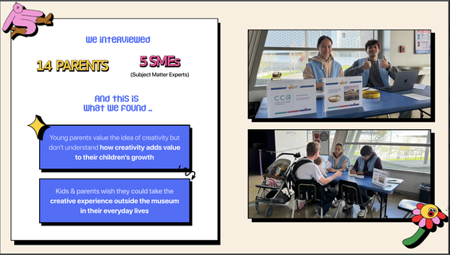
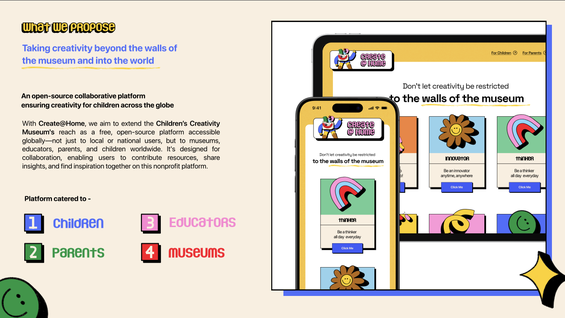
Creativity Beyond the Museum by Bhavya Chauhan, Abheet Dutt, Annie Yi Chung
One might think that embracing creativity in children is not really ‘solving’ a problem and the world is not being affected by the lack of original ideas and exploration. We would like to argue otherwise. Our social lab collaboration with the Children's Creativity Museum seeks to democratize creative experiences, ensuring global accessibility. Central to this effort is the launch of create@home on creativity.org, offering children worldwide a gateway to imaginative exploration.
We also engaged with parents, conducting interviews to understand their motivations for visiting the museum. Our insights revealed: while the museum provides an exceptional onsite experience, there's a noticeable gap in extending its impact beyond its walls. This insight highlighted an opportunity for us to bridge the gap between the museum's interior and the wider world, ensuring its creativity-inspiring mission reaches far and wide.
Our initiative extends beyond solitary creativity to foster community and collaboration. The platform will feature interactive sections for showcasing creations and fostering mentorship. Seamlessly integrating with onsite experiences, it transforms individual endeavors into collaborative masterpieces.
By facilitating a continuous creative path, we aim to instill the value of creativity in children and families alike. Through this collective effort, we aspire to nurture future innovators capable of shaping a more imaginative and vibrant world.
Purpose Project - Little Spark
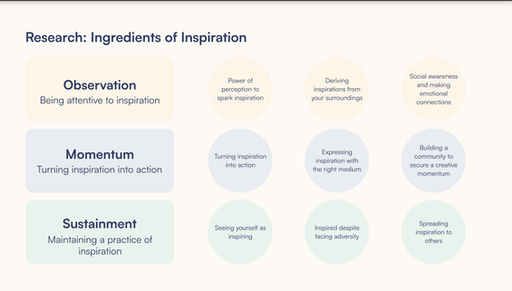
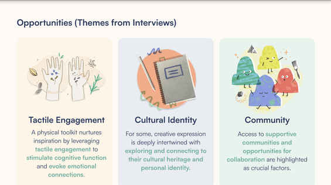
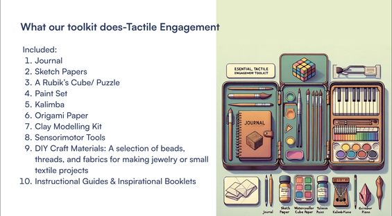
Purpose Project - Little Spark by Yuye Jin, Emma Chuang, Yi Cao and Robinson Ha
Our project aims to empower underprivileged youths by harnessing the transformative power of tactile engagement to nurture inspiration. Focused on leveraging unique identities and personal challenges, our physical toolkit seeks to unlock the potential within young individuals and others of all ages, fostering creativity and resilience.
The toolkit’s design involves human-centered methods, through many conversations with artists like P.Locz, a musician who faced homelessness. He shared how making beats on a broken laptop during his toughest times provided a lifeline of creative expression. His story powerfully illustrates the impact we hope to make, guiding our approach to developing a toolkit that provides a creative spark to those who need it most.
We’ve seen how tough life can get, and we believe in the magic of picking up something physical—a reminder that you’re not alone. Our toolkit is a gateway to exploring who you are and what you can overcome. We are researching its contents to include materials that inspire users to create pieces they are proud of.
We are collaborating with Larkin Street Youth Services, which supports youth farthest from opportunity, and Chopsticks Alley Art, an organization showcasing underserved artists and creating opportunities for low-income groups to be creative. Larkin Street will help us test the toolkit, while Chopsticks Alley Art will assist in distribution and testing.
The funding will be invested in materials for these toolkits, enabling us to uplift those who need it most through tangible, creative expression. With a little help, we can make inspiration tangible, one toolkit at a time.
Urban Oasis - ANV Youth Empowerment
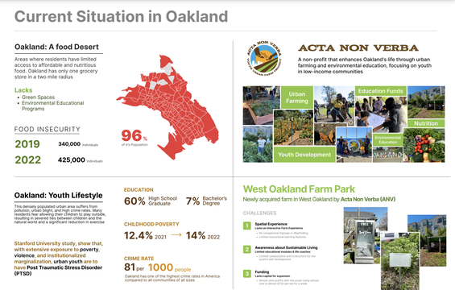
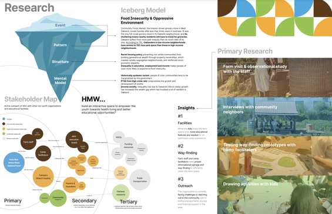
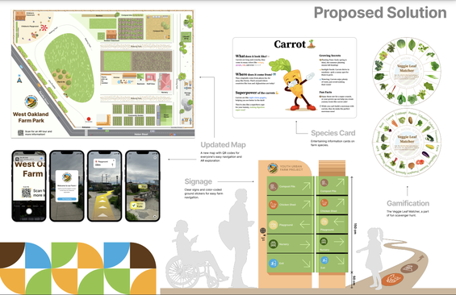
Urban Oasis - ANV Youth Empowerment by Dani Huang, Jessie Zhang, Xiaojie Dong, and Prekshit Satyarthi
Described as a "food desert," Oakland has seen its food insecurity levels rise from 340,000 to 425,000 individuals post-pandemic, affecting a quarter of its population. This issue, alongside limited green spaces and educational opportunities, hinders the community's sustainable growth and well-being. The educational attainment of local youth is concerning, with only 60% graduating from high school and 7% holding a bachelor's degree, highlighting the need for targeted engagement and empowerment efforts.
Acta Non Verba: Youth Urban Farm Project (ANV) addresses this urgent challenge.
West Oakland's farm park, under ANV's stewardship, is a newly developed community green space combating this issue. Currently, the farm lacks essential wayfinding and educational features, compromising its potential for engaging experiences. How might we build an interactive space to empower youth towards healthy living and better educational opportunities?
Our initiative reimagines ANV's farm as a sanctuary for learning, playing, and building connections. Our proposed solutions focus on leveraging physical touchpoints such as a clear wayfinding solution and educational elements, along with digital experiences like the use of augmented reality for interactive exploration tools in the space.
By transforming the farm into a hub of education and exploration, we help ANV invest not only in youth development but also in promoting overall community well-being and sustainable food production.
With your support, ANV can lead the way in redefining urban farming as a vital resource for education, empowerment, and the development of self-sustaining communities in Oakland and beyond.
Thanks you to all of the applicants, finalists, Jurors, and beyond for making this years Impact Awards such a success!
2024 Jurors
CAPL 2023 Impact Awards Recipients
The Community Impact recipient of $10,000: Resilience of Poppies
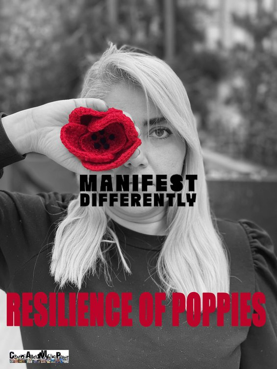
Resilience of Poppies: Manifest Differently by Katayoun Bahrami
The Resilience of Poppies is a project that explores the inspiring story of those who have overcome tragedy and adversity. Through a combination of video and performance, this project tells the story of courageous survivors - men and women targeted by security
forces during protests and shot directly in their eyes, resulting in many of them being blinded. I will use the traditionally feminine craft of crochet to create poppies and distribute these as a performative tool to reflect the resilience and power of collective solidarity. The
poppies will be used in a series of performances, videos, and photographs to help build community and foster a sense of shared belonging. In addition to the physical works of art, Resilience of Poppies will include a series of podcasts available in Farsi and English. The podcasts will focus on the use of art to support and further the Woman, Life, Freedom movement and its impact. I will be
interviewing a range of experts, activists, and community members involved in this movement, exploring how they and their communities have been affected and what they see for the future.
Impact Awards 2023 Grant Report: "The Resilience of Poppies
I am happy to present a comprehensive overview of the impactful outcomes achieved through
the generous support of the CAPL Impact Awards 2023 grant for the project "The Resilience of
Poppies," in collaboration with Clarion Alley Mural Project (CAMP) as part of "Manifest
Differently."
The grant funds were strategically utilized to participate in two significant events hosted by
CAMP in collaboration with CAPL in April and September 2023. These events served as a
dynamic platform for showcasing the project's immersive experiences. They facilitated the
distribution of poppy flowers and crafted crochet poppies, symbolizing resilience and collective
solidarity. The project successfully engaged audiences through live performances, fostering a
profound sense of shared belonging within the community.
Furthermore, the Clarion Alley, San Francisco mural was completed in early September. This
mural is a powerful testament to the strength and courage of individuals who have overcome
adversity. Serving as a permanent embodiment of the project's narrative, it contributes
significantly to the vibrant cultural landscape of the community. I incorporated a poem by an
Iranian-American trans poet in the mural.
The multimedia components of the project, including a compelling video edited by a talented
individual in Iran, have been realized. Additionally, a photo series set in the Mount Diablo poppy
field in June enhances the project's visual impact and is scheduled for exhibition in the media
room at Minnesota Street Project in February and March 2024.
The project's final phase involves creating podcasts in both Farsi and English, featuring
interviews with experts, activists, and community members associated with the Woman, Life,
Freedom movement.
In summary, the Impact Awards 2023 grant has played a pivotal role in bringing "The Resilience
of Poppies" to life, fostering robust community engagement, and impacting the cultural and
social fabric of the communities involved. We sincerely thank you for the invaluable support that
has allowed this project to manifest its vision of resilience, solidarity, and empowerment.
For more information, please see the links below:
● "Resilience of Poppies" event, April 15th, 2023, from 4-6 PM
● A sneak pick of the video
● Mural in Process
● “Manifest Differently” event, September 23rd, 2023, from 12-5 pm
● Artist interview with Farsi language news TV
● Canvas Rebel, Meet Katayoun Bahrami
The Exceptional Innovator Recipient of $5,000: VOTE
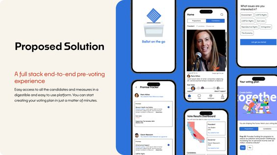
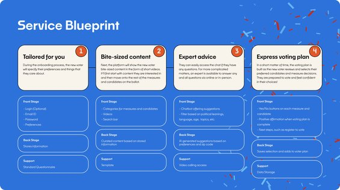
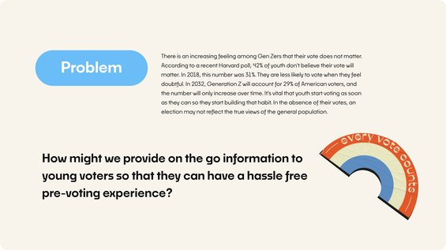
VOTE by Angela Becerra, Preet Ruparelia, and Tanvi Jain
The crux of this research endeavor lies in comprehending the nuances of how younger demographics are swayed towards voting for a particular party, leader, or measure, and how voter activists can effectively engage them in the electoral process. As part of the overall research objectives, we will explore the challenges voter activists face in connecting with youth, devise strategies to involve young people in the voting process, make the pre-voting phase more engaging and convivial, and distribute relevant information to the appropriate audience. An initial supposition posits that voting is a learned practice that evolves over time, implying that the low frequency of voting among young people could stem from their limited opportunities to cultivate and reinforce this habit. Given the potential opportunity costs of voting, such as finding a polling place, learning about the candidates, or taking time off work, first-time or second-time voters may encounter greater obstacles than experienced voters. This is especially true for those with inflexible schedules, limited resources, or transitory housing. To fulfill these research aims, qualitative data collection methods, such as in-depth interviews, were employed to gather insights from young adults between 18-30 years of age residing in diverse regions across the nation. Voter activists and political parties can use the findings of this study to engage younger audiences, increase voter turnout, and streamline the voting experience to make it more accessible and enjoyable. Ultimately, this research and prototype have the potential to strengthen democratic processes by encouraging greater participation from younger generations.
The Outstanding Startup Recipient of $2,500: Hack A:tack
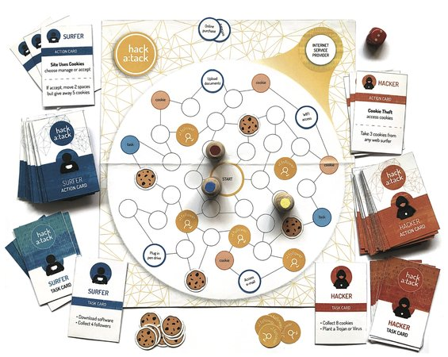
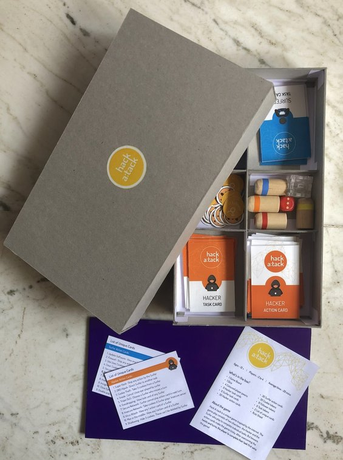
Hack A:tack by Shreya Saraf
ITU reported that in 2020, 71% of youth actively used the internet. Social media has increased internet use since 1996, with kids preferring general apps over child-specific ones. Accessing apps early brings social status, but as they become adults, internet use becomes more serious and
sensitive information is shared. This puts them at high risk of cybercrime. Cyberbullying often goes unreported, and this project aims to suggest a design solution to encourage responsible internet use and protect against online risks. Hack a:tack was created to facilitate learning about online safety, using role play for fun and engagement. The board game aims to familiarize players with internet jargon and prevent common hacks. It involves two or more players who take on the roles of hacker and web surfer, each with specific tasks to complete. The concept involves using
"Action Cards" to introduce jargon in a fun way, encouraging players to apply it and learn. While there is an element of learnability, repeated play enables players to start using the jargon themselves. The main was to intrinsically motivate teens to play. Hack a:tack can be seen as a radical change in the way we approach digital literacy and online safety for teenagers. By making the learning process fun and interactive, we can encourage them to be more responsible with their online behavior, leading to a more just and equitable digital future. The expandable model
and the potential for a digital platform further increase the accessibility and potential impact of the game. The Internet is fun to use, why make learning about it boring?